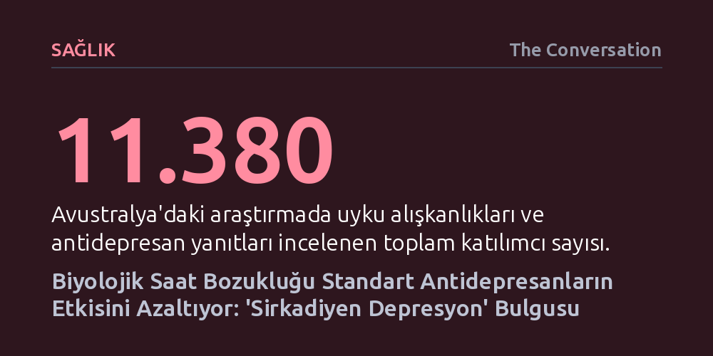

SAGLIK · The Conversation · 2026-10-27
Geniş çaplı yeni bir araştırma, biyolojik saati kaymış 'sirkadiyen depresyon' hastalarının yaygın antidepresanlardan daha az fayda gördüğünü saptadı. Bulgular, uyku ritmini düzenleyen ışık terapisi gibi yöntemlerle depresyon tedavisinin kişiye özel hale getirilebileceğini gösteriyor.
Depresyon tedavisinde standart ilaçların yetersiz kaldığı durumlarda sorunun biyolojik saat uyuşmazlığından kaynaklanabileceğini ve çözümün uyku ritmini hedefleyen yöntemlerde yattığını gösteriyor.

Depresyon yaşayan birçok kişi gün boyunca derin bir yorgunluk hissetmesine ve normalden çok daha uzun uyumasına rağmen sabahları dinlenmiş uyanamaz; gece yatağa girdiğinde ise zihninin tamamen açıldığını fark eder. Psikiyatride uzun süredir yanıt aranan en kritik sorulardan biri, standart antidepresanların neden bazı hastalarda belirgin iyileşme sağlarken bazılarında neredeyse hiçbir fayda göstermediğidir. Yeni bulgular, bu direncin arkasında vücudun iç biyolojik saatindeki kaymaların yatabileceğine işaret ediyor.
Avustralya'da çoğunluğu ağır veya tekrarlayan depresyon tanısına sahip 11.380 kişinin katılımıyla yürütülen kapsamlı bir çalışma, hastaların yaklaşık yüzde 23'ünün araştırmacıların 'sirkadiyen depresyon' olarak adlandırdığı özel bir profile uyduğunu saptadı. Bu alt grup; gece kuşu olma eğilimi, depresif dönemlerde aşırı uyuma, sabahları kronik tükenmişlik, mevsimsel duygu durum değişimleri ve tatil günlerinde uyku saatlerinin belirgin şekilde kayması gibi kriterlerle tanımlanıyor.
Araştırmacılar, bu sirkadiyen profile uyan bireylerin toplumda en yaygın reçete edilen SSRI ve SNRI grubu antidepresanlardan diğer hastalara kıyasla daha az fayda gördüğünü ve daha sık yan etki bildirdiğini belirledi. Yine de bu gruptaki bazı hastalar ilaçtan yarar görmeye devam ediyor; ancak genel tablonun gösterdiği zayıf yanıt, biyolojik saat odaklı yeni tedavi stratejilerine duyulan ihtiyacı ortaya koyuyor.
İnsan vücudu, yaklaşık 24 saatlik periyotlarla işleyen ve sirkadiyen ritim adı verilen karmaşık bir iç saat mekanizmasına sahiptir. Gözlerimize ulaşan doğal gün ışığı, yemek saatleri ve fiziksel aktiviteyle sürekli senkronize edilen bu sistem; yalnızca uyku döngüsünü değil, vücut sıcaklığını, bağışıklık yanıtlarını ve hormon salgısını da yönetir. İç saatimiz ile modern yaşamın mesai saatleri ve sosyal beklentileri çatıştığında, biyolojik denge hızla bozulur.
Uyku bozuklukları ile zihinsel sağlık adeta birbirini besleyen iki yönlü bir kısır döngü oluşturur. Bozulan uyku düzeni depresif belirtileri şiddetlendirirken, artan stres ve çökkünlük hali de günlük yaşam rutinlerini felce uğratır. Biyolojik düzeyde bakıldığında, sirkadiyen ritimdeki aksamaların beyindeki duygu durum ve ödül merkezlerini, özellikle de hayattan zevk alma yetisini doğrudan körelttiği bilinmektedir.
Araştırmada yapılan genetik incelemeler de bu biyolojik bağı destekliyor: İç saati gecikmeye yatkın bireylerde, kan şekerini düzenleyen insülin hormonuna karşı duyarlılık kaybı ve bağışıklık sisteminin iltihaplanma (enflamasyon) tepkilerinde rol oynayan proteinlerle ilişkili kalıtsal yatkınlıklar bulundu. Bu veriler, sirkadiyen depresyonun basit bir uyku düzensizliğinden öte, vücudun temel metabolik ve bağışıklık işleyişiyle kesişen derin bir tablo olduğunu gösteriyor.
Geleneksel antidepresanlar beyindeki kimyasal ileticilerin düzeyini düzenlese de iç saatin zamanlama bozukluğuna doğrudan müdahale edemez. Bu noktada biyolojik saati fiziksel olarak sıfırlamayı amaçlayan yaklaşımlar devreye giriyor. Bunların başında, özellikle sabah saatlerinde uygulanan parlak ışık terapisi yer alıyor. Sabah gözlere ulaşan özel dalga boyundaki yoğun ışık, geciken iç saati öne çekerek kişinin akşamları vaktinde uyumasını ve güne dinç başlamasını kolaylaştırıyor.
Işık kutuları uzun süredir kış aylarında görülen mevsimsel depresyon tedavisinde kullanılıyor; ancak güncel kanıtlar bu yöntemin mevsimsel olmayan klasik depresyonda da güçlü bir etkisi olduğunu gösteriyor. Toplam 858 katılımcıyı içeren 11 klinik deneyin meta-analizi, parlak ışık tedavisi alan hastaların yaklaşık yüzde 41'inin depresyon eşiğinin altına inerek tam klinik iyileşmeye (remisyona) ulaştığını belgeledi. Standart veya loş ışık alan kontrol grubunda ise bu oran yüzde 24'te kaldı.
Bununla birlikte ışık tedavisinin mutlaka uzman gözetiminde planlanması gerekiyor; zira yanlış saatte uygulanan ışık biyolojik saati daha da geciktirebiliyor. Özellikle bipolar bozukluğu olan bireylerde kontrolsüz ışık maruziyetinin taşkınlık ve aşırı uyarılmışlık dönemlerini tetikleme riski bulunuyor. Benzer şekilde akşam saatlerinde yükselen melatonin takviyeleri saati kaydırmada destek olsa da tek başına bir depresyon tedavisi sağladığı henüz kanıtlanmış değil.
Çalışmanın ortaya koyduğu umut verici bulgulara rağmen uzmanlar temkinli olunması gerektiğini vurguluyor. Araştırmanın katılımcıların geçmişe dönük beyanlarına dayanması, katılımcıların tamamının Avrupa kökenli olması ve biyolojik saatlerinin laboratuvarda doğrudan ölçülmemiş olması sonuçları şimdilik bir ön bulgu düzeyinde tutuyor. En önemlisi, hastaların mevcut antidepresan tedavilerini hekimlerine danışmadan kesinlikle değiştirmemesi gerektiği belirtiliyor.
Gelecekte psikiyatristler, tedaviye başlamadan önce hastaların biyolojik saat profillerini nesnel biçimde haritalandırabilir. Akıllı bilekliklerin kaydettiği hareket ve dinlenme örüntüleri veya akşam saatlerinde alınacak tükürük örnekleriyle melatonin artışının ölçülmesi, kişinin iç saatinin ne kadar kaydığını net olarak gösterebilir.
Yürütülecek yeni klinik deneyler bu yaklaşımı doğrularsa, geleceğin depresyon reçetelerinde yalnızca hangi ilacın kaç miligram alınacağı değil, sabah ışığı terapisinin tam olarak hangi saatte ve kaç dakika uygulanacağı da yer alacak.